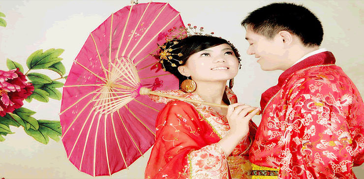

Marriages: One Name Different Versions
Chinese Wedding
Preparing for the Wedding Day
Retreating to the Cock Loft
In preparation for her impending departure, the bride-to-be retreated from the ordinary routine and lived in seclusion in a separate part of the house with her closest friends. During this period, the young women sang laments, mourning the bride’s separation from her family and cursing the go-between –; as well as the groom’s family and even the girl’s own parents. Since this extended ‘sleep over’ often took place in the cock loft, the bride’s emergence on her wedding day was sometimes referred to as "coming out of the cock loft."
Installing the Bridal Bed
Preparation on the part of the groom involved the installation of the bridal bedon the day before the wedding. A propitious hour and a ‘good luck woman’ or ‘good luck man’, that is a man or women with many children and living mates, were selected to install a newly purchased bed. (The installation ceremony consisted of merely moving the bed slightly; the actual work was done by servants or friends.)
After the bed was in place, children were invited onto the bed as an omen of fertility –; the more, the merrier. For the same reason, the bed was scattered with red dates, oranges, lotus seeds, peanuts, pomegranates and other fruits. Part of the fun was watching the children scramble for the fruit.
Day of the Wedding
The "Hair Dressing" Ritual of the bride and the "Capping" Ritual of the groom symbolized their initiation into adulthood and were important parts of the wedding preparations. Red, symbolic of joy, featured prominently in the clothing and other ritual objects pertaining to the wedding.
The "Hair Dressing" Ritual
At dawn on her wedding day (or the night before), the bride bathed in water infused with pumelo, a variety of grapefruit, to cleanse her of evil influences –; and one suspects as a cosmetic to soften her skin in the manner of contemporary alphahydroxls. She put on new underclothes and sat before lit dragon-and-phoenix candles.
A ‘good luck woman’ attended the bridal preparations. She spoke auspicious words while dressing the bride’s hair in the style of a married woman.
After her hair was styled, the bride emerged from her retreat. She was carried to the main hall on the back of the ‘good luck’ woman or her most senior sister-in-law. There she donned a jacket and skirt and stepped into a pair of red shoes, placed in the center of a sieve. The bride’s face was covered with either a red silk veil or a ‘curtain’ of tassels or beads that hung from the bridal Phoenix crown. (The photo below was taken at the mock wedding at a prior year’s Chinese Summer Festival.

After completing her wedding preparations, the bride bowed to her parents and to the ancestral tablets and awaited the arrival of the bridal procession from the groom’s house.
The "Capping" Ritual
Dressed in a long gown, red shoes and a red silk sash with a silk ball on his shoulder, the groom knelt at the family altar while his father placed a cap decorated with cypress leaves on his head.
The groom bowed first before the tablets of Heaven and Earth and his ancestors, then to his parents and the assembled family members. His father removed the silk ball from the sash and placed it on top of the bridal sedan chair.
The Procession from the Groom’s House to Obtain the Bride
The dim of firecrackers, loud gongs and drums marked the start of the procession from the groom’s home. The groom led the procession accompanied by a child as an omen of his future sons, and the bridal sedan chair was proceeded by attendants with lanterns and banners, musicians, and a ‘dancing’ lion or unicorn. According to Hsiang, "Several decades ago, when there was a wedding in Fukien, the groom would to the bride’s house to fetch her, taking with him the bridal chair, which was completely covered with red satin and fresh flowers. He himself made the journey there and back in a blue and yellow teak sedan chair. "
On arriving at the bride’s house, the groom’s party was met by the bride’s friends, who would not ‘surrender ’the bride until they were satisfied by red packets of money, ang pau from the groom’s representative. This was the occasion of much good-natured haggling before the two parties could reach an agreement.
In some cases, the groom would take dinner with the bride’s family, and receive a pair of chopsticks and two wine goblets wrapped in red paper, symbolic of his receiving the joy of the family in the person of their daughter. In some regions, he would be offered sweet longan tea, two hard-boiled eggs in syrup and transparent noodles. Another variation was the groom’s partaking of soup with a soft-boiled egg, the yolk of which he was expected to break, arguably symbolic of breaking the bride’s ties with her family.
The Bride’s Journey to the Groom’s House
The ‘good luck woman’ or a dajin, employed by the bride’s family to look after the bride, carried the bride on her back to the sedan chair. Another attendant might shield the bride with a parasol while a third tossed rice at the sedan chair. Sometimes the bride was borne out in a wooden ‘cage’ with her feet padlocked –; presumably a remnant from rougher times with extremely reluctant brides.
A sieve, shai-tse, which would strain out evil, and a metallic mirror, king, which would reflect light, were suspended at the rear of the bride’s sedan to protect her from evil influence. The bride might also attach a special mirror to her garment, which she would not remove until she was safely seated upon the marriage bed.
Firecrackers were set off to frighten away evil spirits as the bride departed in the sedan chair. The physical movementsymbolized the transfer of the bride from her parent’s family to her husband’s.
Great care was taken to ensure that no inauspicious influence would affect the marriage. The female attendants who escorted the bride to her new home were chosen with particular care that the horoscope animals of their birth years were compatible with that of the bridegroom. The sedan chair itself was heavily curtained to prevent the bride from inadvertently glimpsing an unlucky sight, e.g. a widow, a well, or even a cat. Attendants scattered grain or beans, symbols of fertility, before her.
Arriving at the Groom’s House
Once again, firecrackers were set off just before the procession arrived. A red mat was placed before the sedan chair for the bride lest her feet touch the bare earth as she dismounted. All the household would be waiting to receive her.
The bride was required to step over a saddle or a lit stove to cross the threshold, since the words for "saddle" and "tranquillity" sound the same, ngan, and the fire would cast out of evil influences. An attendant might immediately place a heap of rice in a sieve over or near the bride. If the bride did not wear a lucky mirror, one might be used at this time to flash light upon the bride. In some regions, a grain measure and a string of of copper coins were laid out as talismans of prosperity.
After these rituals took place, the groom could finally raise the red scarf and view the bride’s face.
History of Chinese Wedding Traditions
The Wedding
In contrast to the elaborate preparations, the wedding ceremony itself was simple. The bride and groom were conducted to the family altar, where they paid homage to Heaven and Earth, the family ancestors and the Kitchen God, Tsao-Chün. Tea, generally with two lotus seeds or two red dates in the cup, was offered to the groom’s parents.
Then the bride and groom bowed to each other. This completed the marriage ceremony, except in some regions, where both also drank wine from the same goblet, ate sugar molded in the form of a rooster, and partook of the wedding dinner together.
(See Also: Contemporary Chinese Wedding Tea Ceremony.)
The Nuptial Chamber
Immediately after the ceremony, the couple were led to the bridal chamber, where both sat on the bed. In some areas, honey and wine were poured into two goblets linked by a red thread. The bride and groom took a few sips and then exchanged cups and drank it down. On the day of the wedding (and sometimes for the next three days), the bed chamber was open to visitors, who were given to teasing the young couple with ribald remarks.
The Wedding Banquets
Generally, separate wedding feasts were given by the parents of the bride and the groom for their respective friends and families. Even at the feast, men and women sat separately. There could be a single feast for each or a series of feasts over several days. However, the most important feast was that given the groom’s family on the day of the wedding. It was generally considered as public recognition of the union.
(See Also: Contemporary Chinese Wedding Banquet.
RITUAL
Day After the Wedding
On the day after the wedding, the bride awoke early to attend honor the ancestors at dawn. It was only then that she was then formally introduced to the groom’s relatives and friends. As she knelt before each of the older relatives, she received a small gift. The bride’s parents-in-law gave her a title according to her husband’s seniority in the family hierarchy.
Three Days After the Wedding
In general, three days after the wedding, the couple paid a visit to the bride’s family home, where the bride is now received as a guest.
CONTEMPORARY CHINESE WEDDING CUSTOMS
The application of ancient customs in contemporary Chinese weddings is of great interest of many of our visitors. The following may be helpful in applying Chinese traditions to contemporary weddings.
Selecting an Auspicious Wedding Date:
Auspicious days are subject to interpretation by fortune tellers that perform the analysis based on one’s birth date (day and hour) after consultation with the Chinese almanac. Almanacs containing predictions for the entire year are sold at the beginning of the Lunar New Year by street vendors and in book stores. These paperback books are approximately two inches thick with a wealth of information about Chinese beliefs. It is said to be the oldest continuous publication known. Different versions are published in Taiwan, Hong Kong and mainland China, but unfortunately an English version is not available.
In the Chinese community it is considered bad form if an individual consults the almanac and performs a self analysis. That is why a fortune teller or Fung Suey [Feng Shui] expert is consulted. They usually can also provide horoscope information in advance of the publication of the almanac.
The 15 day period from the middle to the end of the seventh lunar month is considered inauspicious because that is time of the Hungry Ghost Festival when the gates of Hell are opened and the lost spirits are allowed to wonder the earth. They should not be invited to your wedding!